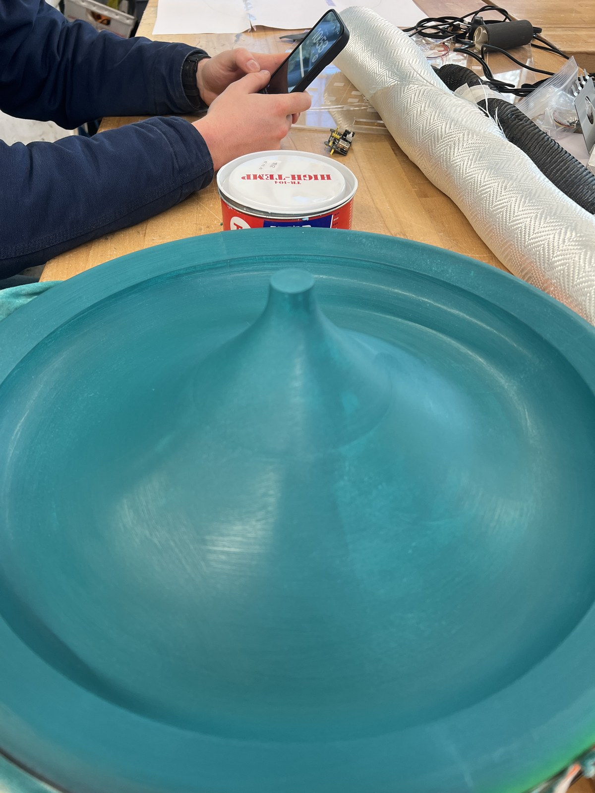
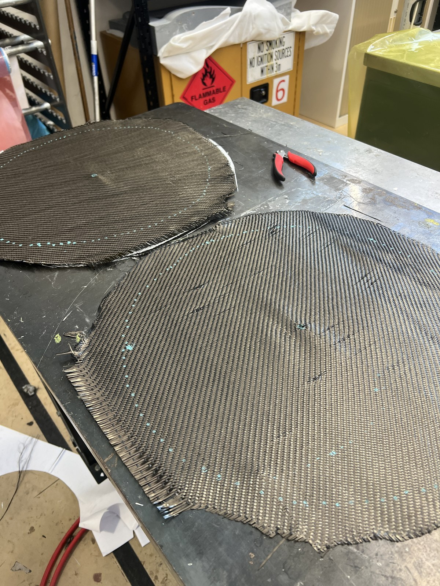
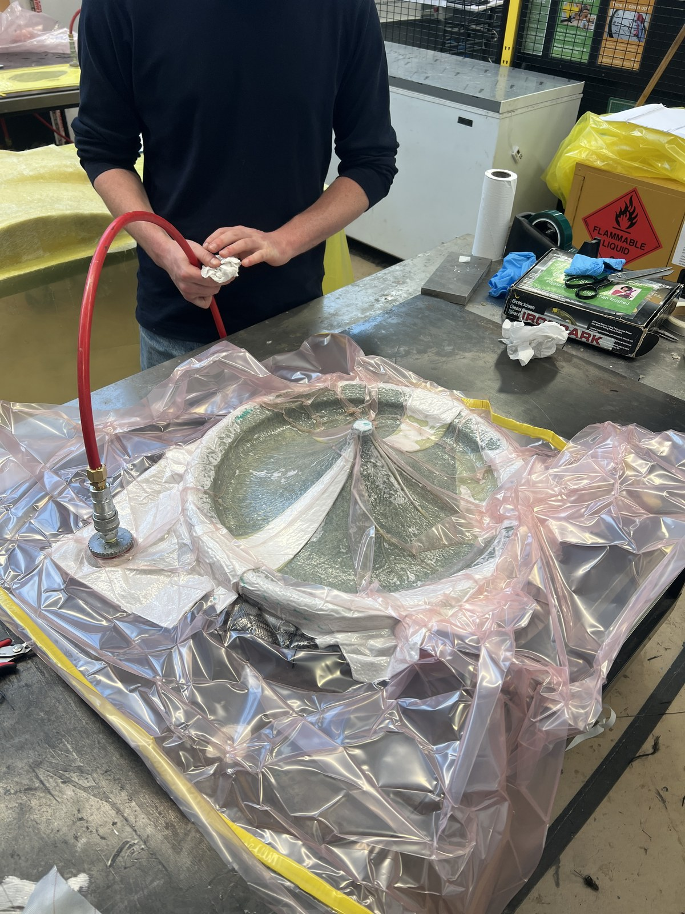

Overview
This is a personal project driven by an interest in both acoustic engineering and composite manufacturing. The goal is a pair of horn speakers designed to operate across the 3.5–20 kHz range, with shells fabricated entirely from carbon fibre for stiffness, low mass, and damping characteristics that are difficult to achieve with conventional speaker cabinet materials.
| Type | Horn speaker — high frequency (HF) |
| Target range | 3.5 – 20 kHz |
| Shell material | Carbon fibre composite — 5 × 200 gsm woven cloth |
| Design tool | Onshape (parametric curves) |
| Tooling | 3D-printed 5-part mould |
| Status | Ongoing |
Horn Geometry Design
The horn profile was developed parametrically in Onshape, allowing the throat diameter, mouth diameter, and flare rate to be tuned against acoustic targets. Parametric modelling meant the geometry could be iterated quickly without rebuilding the model from scratch — any change to a curve parameter propagates through the entire form.
The flare curve was designed to control the rate at which the cross-sectional area expands from throat to mouth, which directly influences the low-frequency cutoff and loading characteristics across the target band.
Tooling & Mould
A five-part split mould was designed to allow the horn geometry to be demoulded cleanly without undercuts trapping the part. Each mould section was 3D printed and assembled with alignment features. Mould surfaces were sanded progressively, sealed, and release agent applied in preparation for the layup.

5-part 3D-printed mould prepped with release agent, ready for carbon fibre layup.
Carbon Fibre Layup
The horn shells were laid up by hand using five layers of 200 gsm woven carbon fibre cloth, wet-laid with epoxy resin. Layers were orientated to balance stiffness in multiple directions and overlapped at the mould parting lines to maintain structural continuity across the seams.
Once laid up, the assembly was sealed in a vacuum bag and left under full vacuum to consolidate the laminate, remove excess resin, and eliminate voids — resulting in a high fibre-volume-fraction shell with a clean surface finish.


Left: 200 gsm woven carbon fibre cloth prepared for layup. Right: wet layup in progress on the mould.
Tools & Methods
Project ongoing — demoulding, finishing, and driver integration in progress.